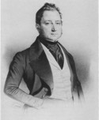
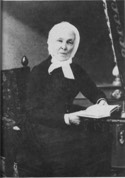

Beaubien-Perrault-Benington - Family Card
Beaubien-Perrault-Benington - Family Card
Pierre Fabre(31 Aug 1762 - 14 Jun 1841)Isidore Julien Perrault , père(17 Aug 1773 - 16 May 1837)
Marie-Anne Lamontagne(12 Jan 1775 - 11 Aug 1835)Euphrosine Lamontagne(5 Oct 1783 - 17 Nov 1850)
m. 9 May 1826, Montréal, Québec

b. 15 Sep 1799, Montréal, Québec
d. 16 Jul 1854, Montréal, Québec
br. Notre-Dame-des-Neiges, Montréal, Quebec
occ. libraire, homme d’affaires, patriote, banquier, maire
edu.
rel.
Flags.

b. 20 Jun 1811, Montréal, Québec
d. 26 Feb 1904, Montréal, Québec
br. Notre-Dame-des-Neiges, Montréal, Quebec
occ. philantrope
edu.
rel.
Flags.
Children
Mgr. Edouard Charles Fabre(28 Feb 1827 - 30 Dec 1896)
Hortense Fabre(28 Feb 1828 - 1898)
Hector Fabre(9 Aug 1834 - 2 Sep 1910)
Gustave-Raymond Fabre(1842 - )
M. Hectorine Fabre(1853 - )